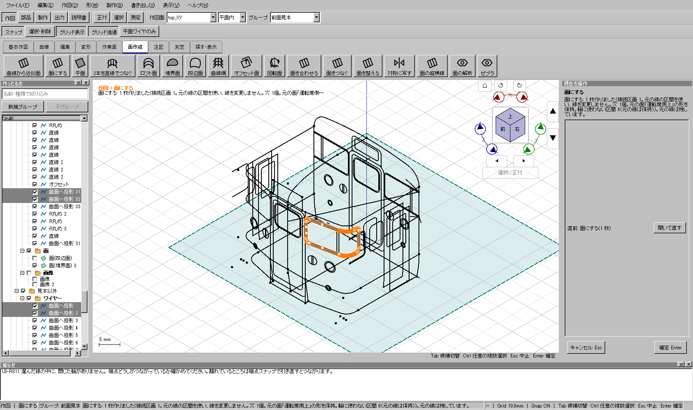
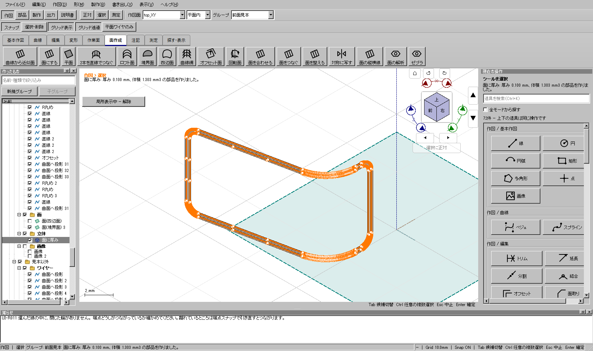

2026-11-04〜05。選択した形状・穴・元の曲線・UUID・参照・取り消しを保ち、作図、面、立体、保存と出力の待ち時間を調査しました。用途専用の操作は追加していません。
Windows全体・配布版検証に成功した改善版です（ソースce55c874d）。「あらゆる形状で処理時間1/3」や「常時60 fps」を達成したという記録ではありません。
GitHubリリース / Windows用ZIP。公開後もGitHub側のdigest・サイズを正式配布物と照合し一致しました。ZIPを展開してkachakacha_cad_next.exeを起動します。
| 問題 | 変更 | 維持する検査 |
|---|---|---|
| 選択した複数部品のSTEPで、最初の部品しか読み戻せない | 別々のSTEPファイルを連結せず、単一のSTEPモデルへ全対象を転送 | 実際の再読込後の部品数・妥当性・体積・寸法 |
| 出力準備・選択時に、非表示の測定画面まで全辺を計算 | 測定画面を開いた時に計算。選択とスナップ候補の重複照合を索引化 | 測定画面を開き直すと現在の選択を即時反映。部分区間や選択順を保持 |
| 一本描くたびに依存順序・UUID文字列化を反復 | 型付きIDによる索引と依存順序の一度の検証 | 決定的な順序、失敗時の文書不変、Undo/Redo |
| 同じ形状の表示メッシュやSTLを反復計算 | 形状の全内容・精度・格子数が一致する場合だけ、容量制限付きキャッシュを再利用 | 形状変更・精度変更・期限切れハンドルを取り違えない |
| 面生成で有限面までの偏差測定を反復 | 境界上の一致を保守的に判定。必要な実距離測定を私有形状で最大2補助スレッドへ分担 | 穴・外形の外・面の延長を面内扱いしない。測定点・集計順・精度は維持 |
| 形状上は滑らかなのに、パラメータ継ぎ目がC0の面を厚み付けできない | 元の支持面を正確なC2スパンに区切り、速い厚みを試す。実STEP検査に通らない場合は領域を結合する経路へ。通常のC1/C2面は従来経路を使用 | 元の面積・法線・接続、穴・切り欠き・内外/中央・反転・実STEP再読込を検査。global-C0を残した壁の早期採用は行わない |
| 平面や双一次面に不要な支持面の節点が多数ある | 全制御点による平面性、または同一UVの全格子と法線偏差による同等性を証明できる場合だけ、計算用コピーを簡素化 | 曲線・穴・切り欠き・向き・配置・面積と実STEPを維持。微小でも真の曲率がある面や、狭い区間で厚み方向が変わる面は勝手に単純化しない |
| 読込時の文字列転送、再構築、表示準備が重い | 検査付きの一時バイナリ転送、不要な裏側UI更新の削減、独立部品を固定2スレッド、表示メッシュを最大3スレッドで処理 | 永続KCD形式は変更しない。逐次処理と形状・境界・メッシュ・アーカイブが一致。破損時は元ファイルから再構築 |
| 毎フレーム、メッシュIDや未使用の描画スタイルを作り直す | 形状revisionでID索引を再利用し、表示されない派生線・格子の空処理を省く | 部分選択・ホバー・選択面の格子・非表示からの再表示・断面・CPU描画の画素を照合 |
| 小さな立体を選択距離でSTEP判定し、厳密検査も二重に実行 | 文書の形状精度とSTEP出力の厳しい方へ判定値を統一 | 0.05 mm級部品の出力、自己交差、実STEP再読込、文書の選択距離不変 |
| Shiftを押した視点移動の開始時に作図候補を再計算 | 視点ドラッグ中の不要な再選択を省く | 視点操作の終了後は作図拘束と候補更新を再開。作図途中の点を失わない |
Windows実機、同じ入力・画面条件で比較。単位は時間です。処理の同時実行は避けていますが、デスクトップ全体の負荷差は残ります。GPUの結果を待つ視点試験と、描画完了を待たない作図入力試験は分けて記載します。
| 対象 | 旧版 | 候補 | 測定条件・判断 |
|---|---|---|---|
| 1,083部品の出力準備 | 408.47秒 | 10.06秒（配布版） | 同じ大モデル。反復する選択・全辺測定を削減 |
| 同モデルのSTEP書き出し | 192.14秒 | 23.79秒（配布版） | 書出後の厳密な再読込検査を含む |
| 同モデルのSTL書き出し | 12.93秒 | 2.28秒（配布版） | 形状・表示精度を落としていない |
| 同モデルのキャッシュなし初回読み込み | 22.98秒（最終同時間帯）、以前の再計測33.96秒 | 19.51秒（配布版）、以前の候補30.26秒/36.41秒 | 最終同時間帯は22.98→19.51秒。1/3未達。OSのファイルキャッシュを破棄した計測ではなく、CADの文書キャッシュを使わず形状を再構築する条件 |
| 1,000線のホバー計算中央値 / p95 | 10.13 / 14.04 ms | 0.72 / 2.76 ms（配布版） | 同じHoverAt呼出し48回。画面への表示完了時間は含まない |
| 同条件の2クリック作図中央値 / p95 | 52.27 / 61.31 ms | 12.03 / 13.44 ms（配布版） | Qtマウスイベント12組、368×459のビュー。GPU完了待ちなし |
| 添付の最大の形状ガイド生成 | 5.95秒 | 約2.95秒 | 1/3未達。有限面への距離測定が残る |
| 添付枠の3D選択→面→厚み→Undo/Redo→冷再読込 | 107.87秒 | 60.52秒（配布版、直前候補77.37秒） | 原本・穴・曲線・参照の保全を含む。途中の332.64秒/363.14秒という退行を検出し修正。全工程の1/3未達 |
| 大モデルの視点変更 | 最終同時間帯の中央値11.50〜12.49 ms | 配布版の中央値6.97〜8.90 ms、p95 9.91〜11.09 ms | 1,083部品/363,688三角形、1928×1184、DPR 1。格子4設定×パン/回転、各64フレーム。GPU完了込み512フレーム中3が16.67 ms超、最大52.69 ms。旧版は11フレーム超。常時60 fpsの保証はしない |
視点の以前の測定は、候補の中央値13.14〜15.22 ms/16.67 ms超61フレーム、旧版16.52〜18.07 ms/314フレーム超でした。さらに前の旧版では14.33〜16.12 ms/141フレーム超です。値の変動が大きいため、配布版の直後に旧版を同一画面寸法・入力・格子条件で再測定しました。最終の速い値だけを普遍的な速度保証へ広げません。旧版の作図確定にも42.54 msと52.27 msの差があります。
旧版はソースadcb417b5の検証済み配布版。配布版はce55c874d。待ち時間の基準と最終値は、out/speed-step-20261104/のJSONとログに保存しています。単発計測を全モデルの速度保証へ広げません。
大モデルの24.34→30.26秒という変動のうち、native直列化とメッシュ準備が約2.77秒、worker再構築が約1.49秒です。厚み1件の差は約0.13秒にとどまり、JSONの読書きや視点計時も広く変動しています。C0の変更が主因であるという根拠はありません。4回とも形状数1,083・三角形数363,688を保持しています。
添付115投影のコピーを使い、3DビューでCtrlクリック→必要なワイヤー全体を明示→穴付き面→0.1 mmの厚み→Undo/Redo→キャッシュなし再読込まで確認しています。これはQtイベントと画面接続APIによる操作試験です。OSのマウス操作を実行したという意味ではありません。


滑らかな円筒支持面のC0パラメータ継ぎ目、2個の穴（うち1個は継ぎ目を横切る三角穴）、外側の切り欠きを組み合わせ、正逆・内外/中央・2構築経路の12条件を確認しています。解析体積、実際のSTEP再読込後の半径、穴を通る検査線、元のBRepの完全一致で確認します。
一方、添付の旧い支持面には法線が実際に折れる箇所もあります。その旧オフセット立体は、STEPにすると体積が変わるためEXP-P003で拒否する場合があります。この制限は解消したと扱いません。元のnative形状・STL・独立KCDを保ち、近似や接続の判定を緩めて見かけ上の成功にはしていません。
未知の輪郭だけから、望む内部曲面を一意に決めることはできません。自己交差・真の隙間・厚みによる折返しなども、形状を勝手に変えず理由を出す対象です。汎用の面・厚み・出力手順は通常画面から作る形状例を参照してください。
途中の実STEP失敗、破損した転送データの拒否、同じ押し出し定義を独立操作として複製した不正fixture、厚み計算の速度退行を記録しています。試験を減らしたり許容誤差を広げたりして成功へ変更していません。厚みの退行はキャッシュなし実モデルの比較で見つけ、配布前に修正しました。正確な分割/積分は約0.2秒で、領域結合の66〜76秒が原因でした。C2分割面から作る検証済みsimple壁は約10〜12秒です。
初回の全体検証は、途中の曲げ状態で固定する操作が164.14秒かかったため意図的に中断し、失敗記録を残しました。単独の再計測では約59秒です。平面とみなす案は元の面が完全な平面ではないため不採用。degree1を旧厚み経路へ戻す案も、17.53秒で終わるものの実STEP検査に失敗するため撤回しました。
初回には診断台帳の失敗も残っていました。2回目の全体検証は開発UI666例に成功した一方、KER-X001の台帳未登録と配布UIの曲げ固定180秒超過で失敗しました。「core192件が成功」とした途中報告は誤りです。台帳を修正し13例成功、固定操作はSTEP判定値を厳密側へ統一して同じoffscreen条件で180.50→92.08秒になりました。時限や幾何検査を緩めず、新規IDの全体検証で確認します。
旧版の同名試験は約6秒でしたが、部品ごとのSTEP全文を連結しReaderを通さず成功としていました。現在は全4部品を単一STEPから復元し検査します。この旧成功時間を、正しい複数部品のSTEP生成時間として比較することはできません。元のnative妥当性まで未検査だったという意味ではありません。
追加の厚み品質試験は25例。描画・選択・視点19例と構造・台帳の重点検査も成功しました。選択した面の格子mode1/mode2と非表示から戻した面を画像で比較しています。平面候補のAxisとパラメータ向きの違い、実trim領域だけでの向き、両面の内外方向、剛体配置、細い区間の法線誤差も検査しています。これらの重点検証と、全体・配布版の検証は区別します。
speed-step-release3-20261105が成功。事前9 CTest、全195 CTest、開発版/配布版それぞれ668 UI、旧CAD自己試験、Windowsの通常起動を正式入口で検証しました。曲げ固定は開発版64.08秒/配布版66.80秒で通過し、180秒制限は変更していません。ソースce55c874d927ee5ddc833249b9417a11b0f09e1a、配布ZIP SHA-256はa2d881df1d2e6fb22d3c19cdcb1700863d19453afd735728c00af94b8c8ece2a。正式publish入口でソース・設定・環境・配布物の一致を再確認済みです。
追加で同じ配布版をWindowsで起動し、添付モデルの3D選択→帯状面→厚み→Undo/Redo→キャッシュなし再読込が成功しました（60.52秒）。原本のSHA-256は変わっていません。計時の詳細と履歴は測定JSONに収録します。